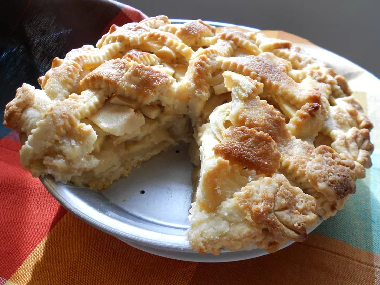

Apple Pie by Grandma Ople
Home

Description
Craving the best homemade apple pie ever? You're in luck! Grandma Ople's famous recipe is a huge hit, and we bet you'll love it too. Give it a try and see what all the fuss is about!
Ingredients
- Apples: Grab about 7-9 small Granny Smith apples. They're perfect for that classic tartness.
- Butter & Flour: You'll use some butter (maybe around 1/4 cup) and a bit of all-purpose flour (about 1/3 cup) to create that lovely, thick filling.
- Sugars: We're going for a delightful mix of white sugar (say, 1/2 cup) and brown sugar (around 1/4 cup). This gives the pie a beautifully balanced sweetness with a warm, cozy touch.
- Pie Crust: You can totally grab a store-bought double pie crust – no judgment here! Or, if you're feeling ambitious, go ahead and make your own at home.
Steps
- Whip up the filling: You'll start by making a simple paste on your stovetop with some flour and butter. Then, you'll stir in sugar and water and bring it to a boil. Let it gently simmer for a bit, then take it off the heat. Easy peasy!
- Build your pie: First, snuggle one pie crust into your pie plate. Next, layer those beautiful sliced apples right on top of the bottom crust. For the top, you'll get a little fancy and create a lattice crust (the recipe will guide you!). Finally, pour that warm butter-sugar mixture right over the lattice.
- Bake it to perfection: Pop your pie into a preheated oven. You'll bake it until the apples are wonderfully soft and that crust is a gorgeous golden brown.